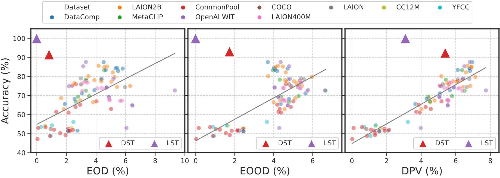

On Hate Scaling Laws For Data-Swamps
Second Part
Models
120 Pre-trained CLIP models
Pre-Training Datasets
- LAION 400M
- LAION 2B
- OpenAI WIT
- CommonPool
- DataComp
- ...
Evaluation Datasets
- CFD
- FairFace
- FACET
- CelebSET
Analysis
- Heatmaps
Analysis
- Hate vs. ImageNet Accuracy
Analysis
- Acc vs. Hate 